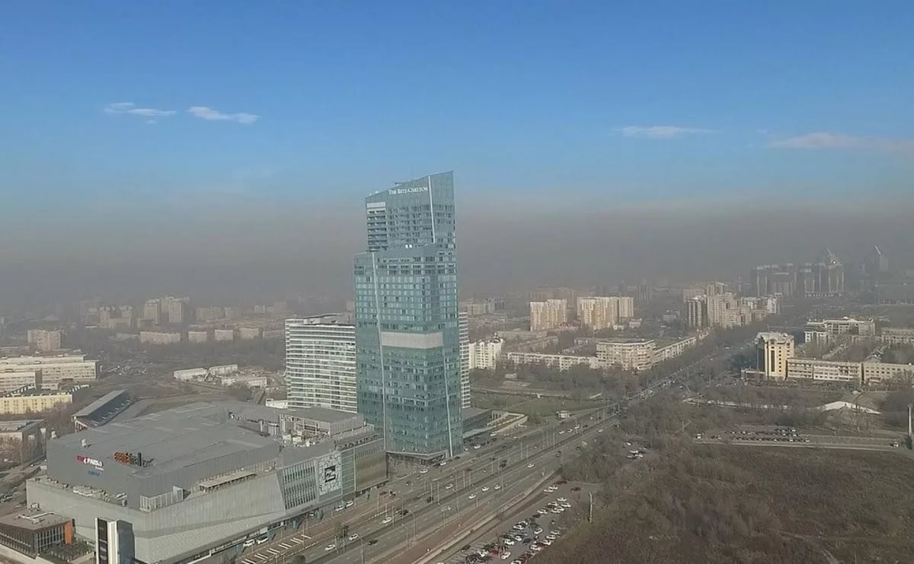

Dirty air is the world's largest environmental risk to human health. Almaty ranks first in the republic in diseases of the respiratory and endocrine systems, blood diseases, cancer and bronchial asthma, although there are no large industrial facilities in the region.The problem of the unfavorable ecology of Almaty and other Kazakhstani cities does not cease to be relevant at any time of the year. The authorities report that they are doing everything possible to improve the situation,
but it is unlikely that any significant changes will happen soon, and you need to breathe the available air right now.There are several probable reasons due to which the airspace of Almaty is covered with thick gray smog: a coal-fired CHP, the geographical location of the city, the so-called under the hood, which is why the city has poor ventilation, as well as a huge number of vehicles on the city streets and traffic jams. To see the real scale of the problem, you can climb the mountains or look at the city and its smog through the window of a plane taking off.
For many years Almaty has been teetering on the brink of an ecological catastrophe. A huge number of citizens come to clinics with complaints of respiratory organs. The state, in turn, spends millions on their treatment, although it would be cheaper to eliminate the source of the problem. The pollution is incredibly higher than the maximum permissible concentration, and our authorities still do not pay due attention to this problem. Smog primarily affects the upper and lower respiratory tract. Further, penetrating through the mucous membrane of the respiratory tract into the bloodstream, smog has an effect on all other organs and systems. "But people from the risk group are especially susceptible to the effects of smog and poorly tolerate it, which includes aged patients over 65 years of age, people with chronic diseases (rhinitis, sinusitis, bronchitis, asthma). Children are also at risk, and even unborn, that is, with the impact of smog on pregnant women negatively affects the developing fetus, "the pulmonologist warns.

From everything we said above, you can understand how dangerous air pollution is for the residents of Almaty. We want to get rid of this problem and make our city clean and the sky blue again. That's why we created "Blue Sky Project". Our goal is to educate the residents of Almaty about this problem and motivate them to take action to get rid of air pollution in order to protect themselves and their loved ones. In the following sections, we will explain in detail why this is so important and what we need to do to save our city.
"It is important to deal with real, not imaginary problems and issues. That is, it is better to use the resources and money of taxpayers to ensure the health and safety of city residents, and not burn these funds to rename streets. Engage not in pressure and persecution of environmental and civic activists, but joint work to solve common problems. Introduce environmental lessons from kindergartens, schools and universities to private companies, akimats and ministries. Judging by what is happening with our cities and regions, with our nature and reserves, the overwhelming majority of the population does not have the most basic knowledge in the field of ecology. "- says journalist Timur Nusimbekov